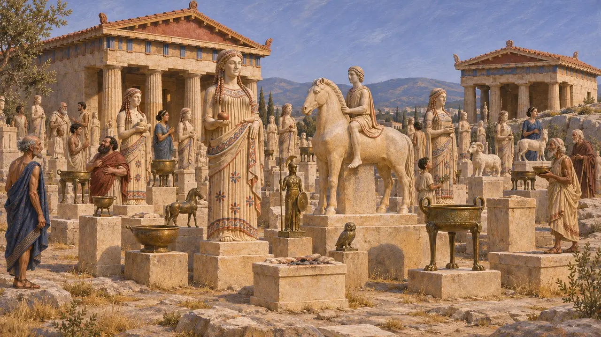
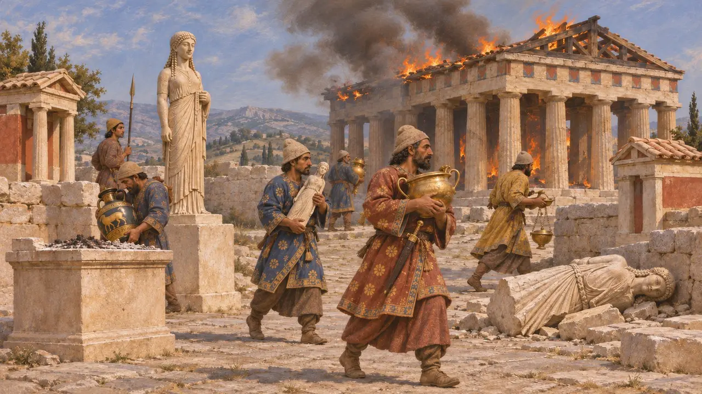
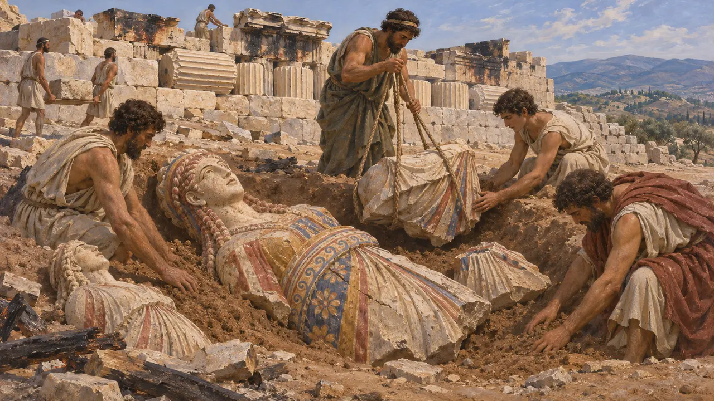
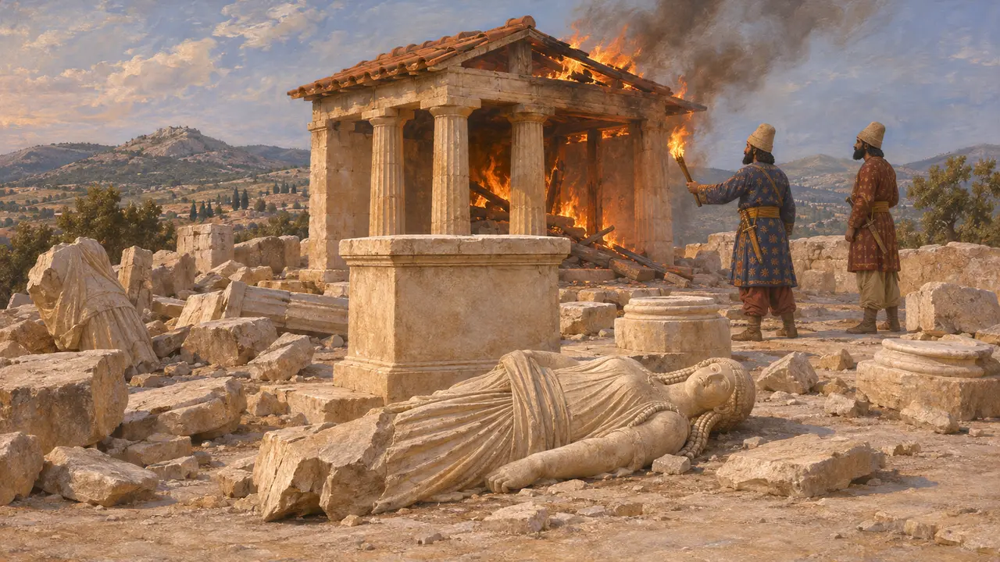
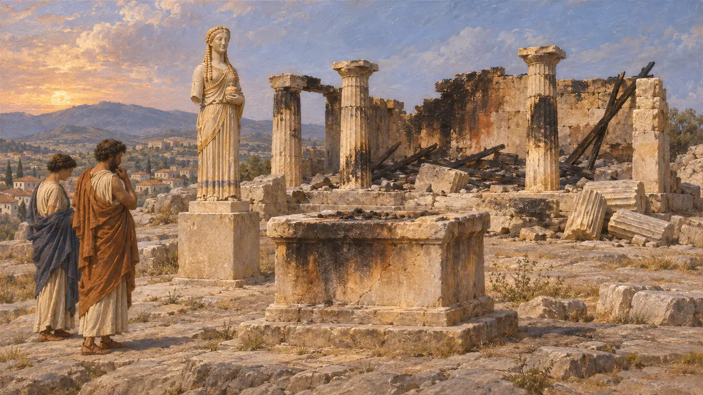

제단과 조각상
기원전 480년에 약탈당한 아테네 아크로폴리스의 봉헌물과 작은 사당들
기원전 480년 이전의 아테네 아크로폴리스에는 제단과 작은 사당, 그리고 수백 점의 봉헌물이 빼곡했다. 가문과 관리들이 세운 대리석 소녀상, 기마상, 청동상, 명문이 새겨진 받침대 등이었다. 크세르크세스의 군대는 이 바위 언덕을 점령한 뒤 성역을 약탈하고 불태웠다. 훗날 아테네인이 묻은 부서진 조각상들은 오늘날 가장 잘 남아 있는 고졸기 그리스 조각 작품에 속한다.
게임에서: 제단과 조각상은 플레이어가 짓지 않는 역사적 건축물로서 레벨 지도에 배치되어 있습니다. 게임 속 설명은 페르시아인이 아크로폴리스를 약탈하고 불태운 일에 관한 헤로도토스 8.53을 따릅니다.

봉헌물로 가득한 바위
당대 기록발굴 결과에 따르면 기원전 6세기와 5세기 초 아테네인들은 신전들 사이의 빈터를 아테나에게 바치는 봉헌물로 가득 채웠다. 상당수는 대리석 코레와 기마상이었고, 청동 조상과 그릇도 있었다. 명문이 새겨진 받침대가 수백 점 남아 있는데, 거기에는 이익의 10분의 1이나 첫 수확물을 여신에게 바친 도공, 관리, 부유한 가문의 이름이 적혀 있다.
A. E. Raubitschek, Dedications from the Athenian Akropolis, 1949; J. Hurwit, The Athenian Acropolis, 1999


묻힌 조각상들
당대 기록전쟁이 끝난 뒤 아테네인은 잔해를 치우고 부서진 조각상과 불탄 건축 부재를 새 테라스의 성토층에 묻었다. 발굴자들은 1885년에서 1890년 사이에 이 퇴적층을 찾아냈고, 채색이 아직 남아 있는 코레상들을 발견했다. 불탄 기둥 북과 엔타블러처 조각들도 아크로폴리스 북쪽 성벽에 끼워 넣어졌으며, 지금도 그곳에서 볼 수 있다.
J. Hurwit, The Athenian Acropolis, 1999

어디까지가 페르시아인의 작업이었는가
분쟁 중고고학자들은 이 퇴적층을 '페르시아 잔해'라고 부르지만, 전부가 한꺼번에 묻힌 것은 아니며 일부 매립토는 수십 년 뒤의 건축 공사 때의 것일 수도 있다. 아테네는 기원전 479년에 두 번째로 점령되기도 했는데, 헤로도토스는 이때 마르도니오스가 남아 있던 것을 모조리 불태웠다고 전한다. 크리티오스 소년상 같은 일부 조각상이 기원전 480년 이전에 만들어졌는지 이후에 만들어졌는지를 두고 역사가들은 지금도 논쟁한다.
Herodotus 9.13; J. Hurwit, The Athenian Acropolis, 1999

재건하지 않겠다는 맹세
분쟁 중기원전 4세기의 아테네인들은 그리스인들이 플라타이아 전투에 앞서, 불탄 성소들을 기념물로 삼아 폐허 그대로 두겠다고 맹세했다고 주장했다. 연설가 리쿠르고스가 이 맹세를 인용하고 역사가 디오도로스도 이를 되풀이한다. 그러나 테오폼포스는 이 맹세를 아테네인의 날조라고 했으며, 아카르나이에서 발견된 기원전 4세기의 비문 사본에는 신전에 관한 조항이 없다. 학자들의 견해는 여전히 엇갈리지만, 아크로폴리스에 새 신전이 서기까지 오랜 공백이 있었다는 점은 이 이야기와 들어맞는다.
Lycurgus, Against Leocrates 81; Diodorus 11.29; Theopompus, FGrHist 115 F 153
출처
- Herodotus 5.102; 8.52-54; 9.13
- J. Hurwit, The Athenian Acropolis, 1999
- A. E. Raubitschek, Dedications from the Athenian Akropolis, 1949
- Lycurgus, Against Leocrates 81
- Diodorus 11.29
- Theopompus, FGrHist 115 F 153